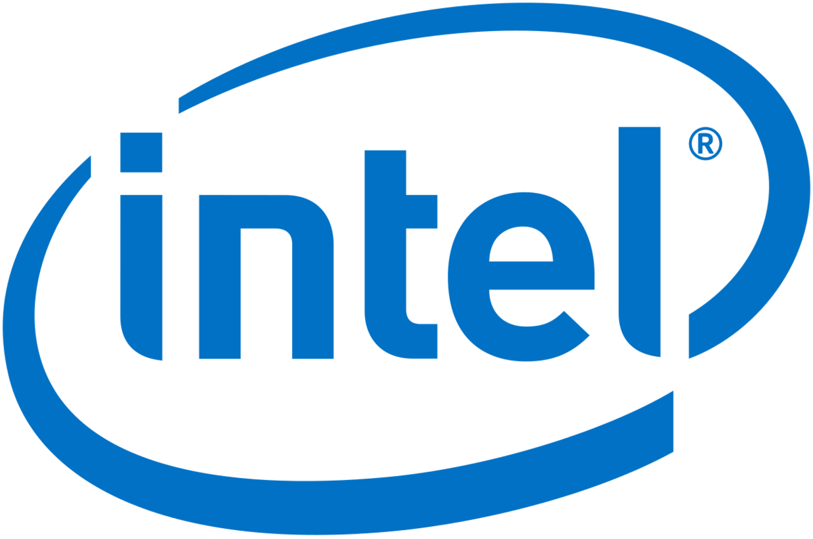

The subsystem that made INTEL a successful company


What really saved intel is in fact a good management system with a resource allocation module that was driven by decision criteria that allocated more financial resources to the newly discovered microprocessor product that was, in the eyes of the key executives, just a low end and low priority product in front of the core product that was the DRAM. This resource allocation subsystem made the microprocessor's budget bigger and bigger making Intel a microprocessor business. This event happened without the decision of the key executives who still were seeing and believing that the business of intel was the DRAM
the decision criteria of Intel’s resource allocation subsystem was by gross margin level the product or project that got higher gross margin was given higher financial resources. This was simply how intel’s decision-making system was designed and it benefited Ted Hoff who saw his project get more funds year over year until defining a whole new industry of personal computers and the rise of startups like Microsoft and Apple.
I hope you will work for a company that has a good business decision system because as someone with a lot of innovative ideas that work you will have the opportunity to get your projects funded and your team grow until this idea that you were thinking only in your mind become this one that makes this company or these ideas you enrolled become a leader in its industry, I hope you will like ted Hoff did